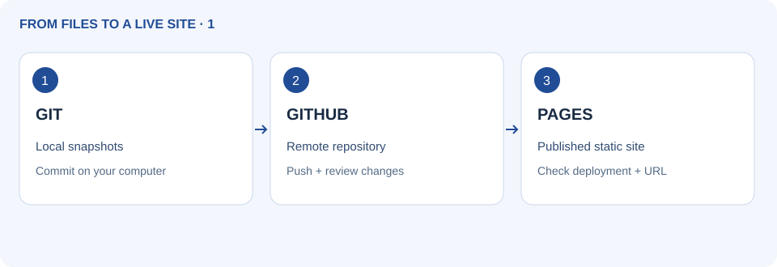
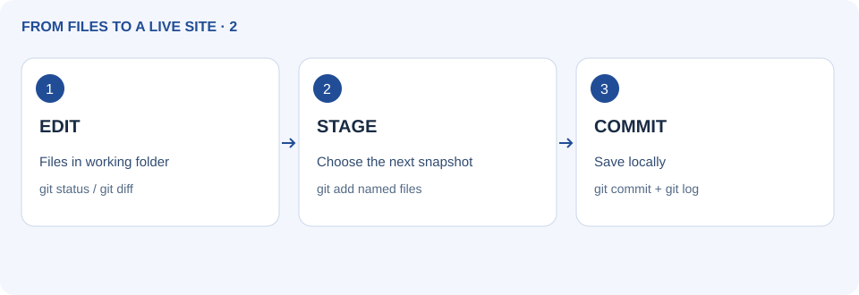
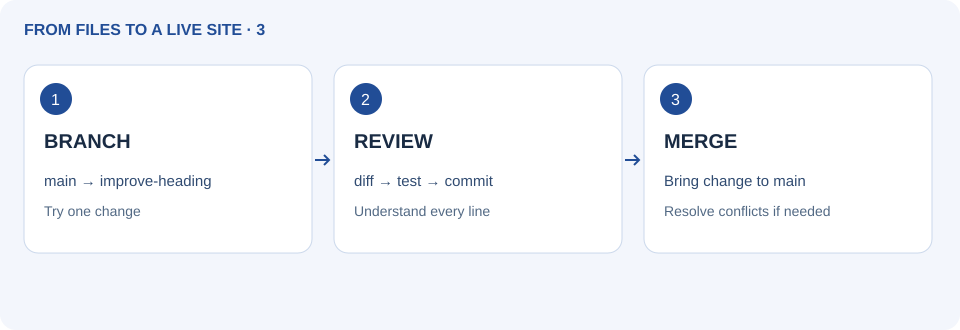
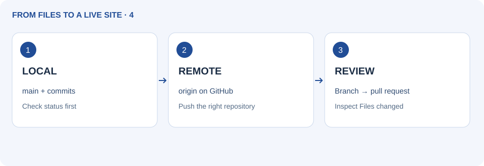
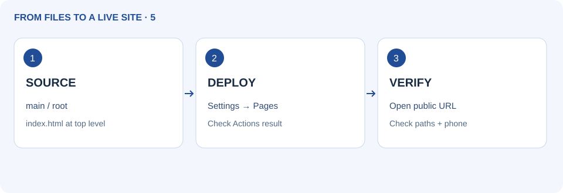
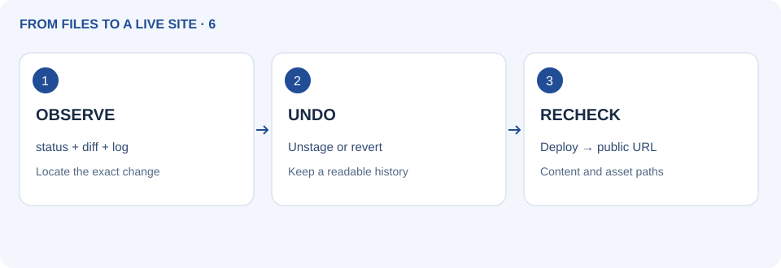
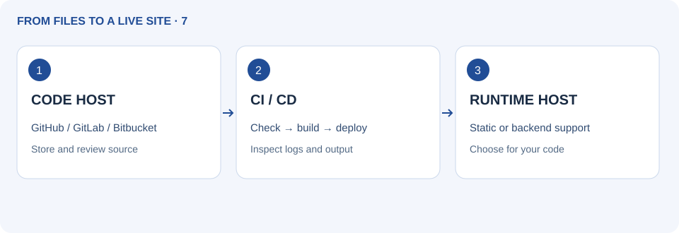

Git, GitHub and publishing websites
Git, GitHub और website publishing। पहले चित्र देखें, फिर उदाहरण और अभ्यास करें।
Official references checked 27 September 2026. Service plans and interfaces can change; use the linked provider documentation for current limits.
1. Git, GitHub and Pages are different tools

Git records project history on your computer. A repository contains tracked files and commits. GitHub hosts repositories and collaboration tools. GitHub Pages publishes static web files from a repository. A commit stays local until pushed; a push is not proof that deployment succeeded. A branch is a named line of work.
Try it
Open the publishing starter below and change its heading in your own copy. Identify the editable file, the future Git repository, the GitHub repository URL and the published website URL. They are different locations.
Working file → staged change → local commit
Local commit → push → GitHub repository
Publishing workflow → deployed website
Repository: https://github.com/YOUR-USER/first-site
Website: https://YOUR-USER.github.io/first-site/Check
Explain “save → commit → push → deploy” without treating any two steps as identical.
हिंदी में पढ़ें
Git, GitHub और Pages अलग tools हैं
Git computer पर project history रखता है। Repository में tracked files और commits होते हैं। GitHub repositories और collaboration host करता है। GitHub Pages repository से static website publish करता है। Commit push तक local रहता है; push deployment सफलता का प्रमाण नहीं। Branch काम की अलग line है।
नीचे publishing starter अपनी copy में खोलकर heading बदलें। Editable file, Git repository, GitHub repository URL और published website URL पहचानें। ये अलग जगहें हैं।
save → commit → push → deploy समझाएँ; कोई दो कदम एक न मानें।
Complete AI coaching prompt
Official references: Git: snapshots and the three states · GitHub Pages: what it hosts
2. Install Git and make your first commit

Install Git from git-scm.com, then check git --version. Use a new practice folder, not an unrelated existing repository. Git tracks selected files. .gitignore prevents matching untracked files from being added; it does not remove files already tracked or erase leaked secrets. Configure your name/email; use your GitHub-provided no-reply email if desired.
Try it
Extract the Git starter and open a terminal inside it. Replace the two identity placeholders below. Run each command, read status, stage only the named practice files and make a commit. HEAD is the current commit reference.
git --version
git init -b main
git config user.name "YOUR NAME"
git config user.email "YOUR EMAIL"
git status
git add index.html styles.css README.md GUIDE.html .gitignore visuals/
git diff --cached
git commit -m "Add first practice page"
git log --onelineCheck
git status reports a clean working tree and git log shows the initial commit. No .env or database file is staged.
हिंदी में पढ़ें
Git install करें और पहला commit बनाएँ
git-scm.com से Git install करके git --version जाँचें। नया practice folder लें। Git चुनी files track करता है। .gitignore matching untracked files जोड़ने से रोकता है; पहले tracked files या leaked secrets नहीं मिटाता। Name/email set करें; चाहें तो GitHub का अपना no-reply email लें।
Git starter निकालकर उसी folder में terminal खोलें। नीचे identity placeholders बदलें। Commands एक-एक करके पढ़ें, केवल बताई files stage करें और commit बनाएँ। HEAD current commit reference है।
git status clean working tree और git log पहला commit दिखाए। .env या database staged न हों।
Complete AI coaching prompt
Official references: Git: snapshots and the three states · Git installation · Git ignore rules
3. Read changes, branch and merge

git diff shows unstaged edits; git diff --cached shows staged edits. A branch lets you try a change separately. Merge combines histories. A conflict occurs when Git cannot resolve changes automatically; read both versions, edit the intended result, test and commit. Do not choose “ours” or “theirs” without understanding the content.
Try it
From a clean main branch, create improve-heading. Edit only the heading, inspect the diff, commit, return to main and merge. For conflict practice use a disposable copy and ask your trainer to change the same line on two branches.
git switch -c improve-heading
# Edit index.html in your editor, then:
git diff
git add index.html
git diff --cached
git commit -m "Clarify the page heading"
git switch main
git merge improve-heading
git log --oneline --graph --allCheck
The heading change appears on main. You can identify the commit in git log --oneline --graph --all.
हिंदी में पढ़ें
Changes पढ़ें, branch और merge करें
git diff unstaged और git diff --cached staged बदलाव दिखाता है। Branch पर अलग बदलाव आज़मा सकते हैं। Merge histories जोड़ता है। Git खुद न सुलझा सके तो conflict आता है; दोनों versions पढ़ें, सही result लिखें, test और commit करें। समझे बिना ours/theirs न चुनें।
Clean main से improve-heading बनाएँ। केवल heading बदलकर diff देखें, commit करें, main पर लौटकर merge करें। Conflict अभ्यास के लिए disposable copy में दो branches पर एक line बदलवाएँ।
Heading main पर बदले और git log --oneline --graph --all में commit दिखे।
Complete AI coaching prompt
Official references: GitHub: branches and pull requests · Git branching and merging
4. Connect GitHub, push and review a pull request

Create an empty repository on GitHub for this local project; do not initialise it with another README. origin is a conventional remote name. Push sends commits; fetch downloads remote history; pull also integrates it. Authenticate using GitHub’s supported browser/credential-manager or SSH flow; a GitHub account password is not used as the Git HTTPS password. A pull request proposes a branch change for review.
Try it
Replace YOUR-USER and first-site with your real repository address. Add the remote and push main. For a new branch, push it and open Compare & pull request, review Files changed, then merge after checks. If remote already has commits, clone it into a new folder instead of overwriting its history.
git remote add origin https://github.com/YOUR-USER/first-site.git
git remote -v
git push -u origin main
# Later, from a clean working tree:
git pull --ff-only
# If Git reports divergence, stop and inspect; do not force push.Check
git remote -v shows your intended repository. GitHub shows your commit and files. No secret or unrelated file is included.
हिंदी में पढ़ें
GitHub जोड़ें, push और pull request review करें
Local project के लिए GitHub पर empty repository बनाएँ; दूसरी README से initialise न करें। origin remote का सामान्य नाम है। Push commits भेजता, fetch history लाता और pull integrate भी करता है। Supported browser/credential manager या SSH से sign in करें; Git HTTPS में account password नहीं चलता। Pull request branch बदलाव review के लिए है।
YOUR-USER और first-site को असली address से बदलें। Remote जोड़कर main push करें। नई branch push करके Compare & pull request, Files changed और checks review करें। Remote में commits हों तो नया folder clone करें; history overwrite न करें।
git remote -v सही repository दिखाए। GitHub पर commit और files आएँ। Secret या unrelated file न हो।
Complete AI coaching prompt
Official references: GitHub: branches and pull requests · Git push · GitHub authentication
5. Publish a page with GitHub Pages

GitHub Pages serves static HTML, CSS and JavaScript. For a basic practice site, use a public repository and branch publishing. A project site usually has /repository-name/ in its URL, so use relative asset links such as styles.css. A custom domain is optional. Python/Node server processes and a private database do not run on Pages.
Try it
Put index.html at the repository root. Repository Settings → Pages → Build and deployment → Source: Deploy from a branch → main and /(root) → Save. Open Actions to watch publishing, then use the site URL shown in Pages. If Pages is unavailable, check repository permissions and current plan. Browser-only route: upload the extracted static files (not the ZIP), commit them, then use the same Pages settings.
<!-- Relative paths work under /first-site/ -->
<link rel="stylesheet" href="styles.css">
<a href="GUIDE.html">Guide</a>
Expected project URL:
https://YOUR-USER.github.io/first-site/Check
Deployment succeeds, the public URL loads your heading, CSS works under /first-site/, and phone layout fits. Push success alone is not enough.
हिंदी में पढ़ें
GitHub Pages पर page publish करें
GitHub Pages static HTML/CSS/JavaScript देता है। Basic अभ्यास में public repository और branch publishing लें। Project URL में अक्सर /repository-name/ होता है, इसलिए styles.css जैसे relative links लें। Custom domain optional है। Pages Python/Node server process या private database नहीं चलाता।
Repository root में index.html रखें। Settings → Pages → Build and deployment → Source: Deploy from a branch → main और /(root) → Save। Actions में publishing देखें और Pages का site URL खोलें। Pages न दिखे तो permissions/plan देखें। Browser route में ZIP नहीं, निकाली static files upload और commit करें; फिर वही Pages settings लें।
Deployment सफल हो, public URL पर heading और /first-site/ में CSS चले, phone पर fit हो। केवल push सफलता काफी नहीं।
Complete AI coaching prompt
Official references: GitHub Pages: what it hosts · GitHub Pages: configure the publishing source
6. Update, undo and troubleshoot a published site

Make small commits and inspect history. To unstage a file while keeping edits, use git restore --staged. To undo a committed change on a clean shared branch, git revert creates a new reversing commit. Restoring working files can discard edits; inspect and back up first. A 404 often means wrong publishing folder or URL; missing CSS can be a path or letter-case issue.
Try it
Change the heading in your practice copy, inspect, commit and push. Verify the new deployment. For an isolated disposable practice commit only, try git revert --no-edit HEAD from a clean state and inspect the new log. Do not run this blindly in a work repository.
git status
git diff
git diff --cached
# Unstage while preserving the edit:
git restore --staged index.html
# Only for the intended latest practice commit, with clean status:
git revert --no-edit HEAD
git log --onelineCheck
History keeps both the original and reversing commit. The published content matches the latest successful deployment.
हिंदी में पढ़ें
Published site update, undo और troubleshoot करें
छोटे commits करें। Edits रखते हुए unstage के लिए git restore --staged लें। Clean shared branch पर committed बदलाव undo करने को git revert नया उल्टा commit बनाता है। Working files restore करने से edits मिट सकते हैं; पहले देखें और backup लें। 404 में folder/URL और CSS न आने पर path/case जाँचें।
Practice copy की heading बदलें, inspect, commit, push और deployment जाँचें। केवल अलग disposable practice commit पर clean state से git revert --no-edit HEAD करके log देखें। Work repository में blindly न चलाएँ।
History में original और reverse दोनों commits रहें। Published content आखिरी सफल deployment से मिले।
Complete AI coaching prompt
Official references: Git restore · Git revert · GitHub Pages: configure the publishing source
7. Other developer tools and hosting choices

GitHub Desktop offers a visual Git workflow; command-line Git helps you see exact operations. GitLab and Bitbucket are other repository hosts; GitLab Pages also publishes static sites. Cloudflare Pages, Netlify and Vercel provide web deployment workflows. Render can run compatible backend services. Compare what your code needs before choosing. CI checks changes; CD deploys approved output.
Try it
Choose two providers from the directory. Compare static hosting, supported backend runtime, build command, output folder, custom domain, preview deployments and database persistence. Use official current docs for plan limits. For a plain static project, no framework build may be needed. For a generated site, deploy its actual output folder.
Before choosing a host, record:
Source repository: ____
Runtime: static files / Python / Node / other
Build command and output folder: ____
Database persistence and backup: ____
Domain / HTTPS / current plan limits: ____Check
You can justify a host for Snake and a different architecture for the Python/SQLite app. You distinguish a repository host from a runtime host.
हिंदी में पढ़ें
दूसरे developer tools और hosting विकल्प
GitHub Desktop visual Git workflow देता है; command-line Git exact operations दिखाता है। GitLab और Bitbucket अन्य repository hosts हैं; GitLab Pages static sites भी देता है। Cloudflare Pages, Netlify और Vercel web deployment देते हैं। Render compatible backend services चला सकता है। पहले code की जरूरत देखें। CI changes जाँचता, CD approved output deploy करता है।
Directory से दो providers चुनें। Static/backend runtime, build command, output folder, domain, preview और database persistence तुलना करें। Current plan limits official docs में देखें। Plain static project में framework build जरूरी नहीं; generated site का सही output folder deploy करें।
Snake का host और Python/SQLite का अलग architecture समझा सकें। Repository और runtime host अलग पहचानें।
| Role | Provider | Use |
|---|---|---|
| Static sites | GitHub Pages | HTML/CSS/JS sites; no running Python server |
| Static sites + optional functions | Cloudflare Pages | Static deployment; backend functions have a separate runtime |
| Web deployment | Vercel | Frontend deployments and supported server functions |
| Web deployment | Netlify | Static sites and serverless functions |
| Backend hosting | Render | Web service processes; check persistence and plan limits |
| Managed database | Supabase | Hosted PostgreSQL and related backend services |
| Cloud infrastructure | Amazon Web Services | Compute, storage and managed services |
| Cloud infrastructure | Microsoft Azure | Cloud resources such as compute, storage and databases |
| Cloud infrastructure | Google Cloud | Compute, storage and other managed cloud services |
| Domain registration | Cloudflare Registrar / Namecheap | Register and renew names; hosting may be separate |
| Git hosting + static publishing | GitLab Pages | Repository workflow and static site publishing |
Complete AI coaching prompt
Official references: GitHub Desktop · GitLab Pages · Bitbucket · Cloudflare Pages · Netlify · Vercel